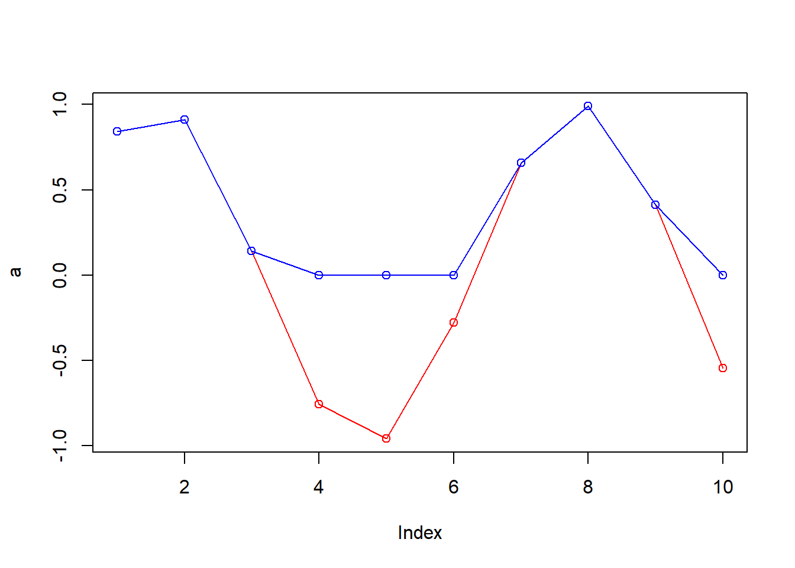

a = 1000000
print(a)[1] 1e+06a = 1e15
print(a)[1] 1e+15a = 1e318 #เยอะสุด
print(a)[1] Infb = 1e-324 #เยอะสุด
print(b)[1] 0วันที่ 2024-12-27
สถานะ: สำเร็จ
a = 1000000
print(a)[1] 1e+06a = 1e15
print(a)[1] 1e+15a = 1e318 #เยอะสุด
print(a)[1] Infb = 1e-324 #เยอะสุด
print(b)[1] 0act.linear = function(x)
{
out = x / 2
return(out)
}
a = c(1:10)
a = sin(a)
plot(a, type='o', col='red')
b = act.linear(a)
print(b) [1] 0.4207355 0.4546487 0.0705600 -0.3784012 -0.4794621 -0.1397077
[7] 0.3284933 0.4946791 0.2060592 -0.2720106lines(b, type='o', col='blue')act.step = function(x)
{
# > 0.5; 1
# <= 0.5 & >= 0.5; 0
# < -0.5; -1
out = x
for(i in 1:length(x))
{
if(x[i]>0.5) {out[i] = 1}else{
if(x[i]<=0.5 & x[i]>=-0.5) {out[i] = 0}else{
out[i] = -1
}
}
}
return(out)
}
act.step2 = function(x)
{
# > 0.5; 1
# <= 0.5 & >= 0.5; 0
# < -0.5; -1
out = x
out[x>0.5] = 1
out[x<=0.5 & x>=-0.5] = 0
out[x< -0.5] = -1
return(out)
}
a = c(1:20)
a = sin(a)*3
plot(a, type='o', col='red')
b = act.step(a)
print(b) [1] 1 1 0 -1 -1 -1 1 1 1 -1 -1 -1 1 1 1 -1 -1 -1 0 1lines(b, type='o', col='blue')
b = act.step2(a)
print(b) [1] 1 1 0 -1 -1 -1 1 1 1 -1 -1 -1 1 1 1 -1 -1 -1 0 1lines(b, type='o', col='green')act.sigmoid = function(x) #Output อยู่ซีกบวก
{
out = 1.5 / (1+exp(-1*(x-0.5)))
return(out)
}
a = c(1:10)
a = sin(a)
plot(a, type='o', col='red')
b = act.sigmoid(a)
print(b) [1] 0.8768217 0.9013791 0.6168461 0.3322872 0.2829479 0.4716688 0.8087494
[8] 0.9299329 0.7170656 0.3905623lines(b, type='o', col='blue')
act.tanh = function(x) #Output อยู่ซีบวกและลบ
{
out = tanh(x)
return(out)
}
a = c(1:10)
a = sin(a)
plot(a, type='o', col='red')
b = act.tanh(a)
print(b) [1] 0.6865874 0.7207949 0.1401906 -0.6391897 -0.7437967 -0.2723640
[7] 0.5763545 0.7570885 0.3902700 -0.4960258lines(b, type='o', col='blue')act.softmax = function(x)
{
ez = exp(x)
out = ez / sum(ez)
return(out)
}
a = c(1:10)
a = sin(a)
plot(a, type='o', col='red')
b = act.softmax(a)
print(b) [1] 0.16254595 0.17395336 0.08068961 0.03287417 0.02685805 0.05298847
[7] 0.13516231 0.18845288 0.10580611 0.04066910sum(b)[1] 1lines(b, type='o', col='blue')act.relu = function(x)
{
out = x
out[x<0] = 0
return(out)
}
a = c(1:10)
a = sin(a)
plot(a, type='o', col='red')
b = act.relu(a)
print(b) [1] 0.8414710 0.9092974 0.1411200 0.0000000 0.0000000 0.0000000 0.6569866
[8] 0.9893582 0.4121185 0.0000000lines(b, type='o', col='blue')
Install package
#install.package("neuralnet")
library("neuralnet")
??neuralnetstarting httpd help server ... doneand = c(0,0,0,1)
truthtable = expand.grid(c(0,1),c(0,1))
and.data = data.frame(truthtable, and)
print(and.data) Var1 Var2 and
1 0 0 0
2 1 0 0
3 0 1 0
4 1 1 1#Edit column name
colnames(and.data) = c("A", "B", "OUT")
print(and.data) A B OUT
1 0 0 0
2 1 0 0
3 0 1 0
4 1 1 1net = neuralnet(OUT~A+B,
and.data,
hidden = 0,
stepmax = 1e5,
rep = 1)
print(net)$call
neuralnet(formula = OUT ~ A + B, data = and.data, hidden = 0,
stepmax = 1e+05, rep = 1)
$response
OUT
1 0
2 0
3 0
4 1
$covariate
A B
[1,] 0 0
[2,] 1 0
[3,] 0 1
[4,] 1 1
$model.list
$model.list$response
[1] "OUT"
$model.list$variables
[1] "A" "B"
$err.fct
function (x, y)
{
1/2 * (y - x)^2
}
<bytecode: 0x000001ba21b32880>
<environment: 0x000001ba21b3d108>
attr(,"type")
[1] "sse"
$act.fct
function (x)
{
1/(1 + exp(-x))
}
<bytecode: 0x000001ba21b35df0>
<environment: 0x000001ba21b354f8>
attr(,"type")
[1] "logistic"
$linear.output
[1] TRUE
$data
A B OUT
1 0 0 0
2 1 0 0
3 0 1 0
4 1 1 1
$exclude
NULL
$net.result
$net.result[[1]]
[,1]
[1,] -0.2561827
[2,] 0.2500632
[3,] 0.2497544
[4,] 0.7560003
$weights
$weights[[1]]
$weights[[1]][[1]]
[,1]
[1,] -0.2561827
[2,] 0.5062459
[3,] 0.5059371
$generalized.weights
$generalized.weights[[1]]
[,1] [,2]
[1,] -1.573109 -1.572150
[2,] 2.699523 2.697877
[3,] 2.701748 2.700100
[4,] 2.744418 2.742744
$startweights
$startweights[[1]]
$startweights[[1]][[1]]
[,1]
[1,] -1.4646210
[2,] -0.1277174
[3,] 0.9662501
$result.matrix
[,1]
error 0.125037147
reached.threshold 0.006063445
steps 37.000000000
Intercept.to.OUT -0.256182699
A.to.OUT 0.506245869
B.to.OUT 0.505937104
attr(,"class")
[1] "nn"saveRDS(net, "C:/Users/User/DL/net.rds")
#net2 = readRDS("D:/DL/net.rds")plot(net)A = c(0,1,0,1,0,0)
B = c(0,0,1,1,1,0)
datatest = data.frame(A,B)
pred = predict(net, datatest)
print(pred) [,1]
[1,] -0.2561827
[2,] 0.2500632
[3,] 0.2497544
[4,] 0.7560003
[5,] 0.2497544
[6,] -0.2561827and = c(0,0,0,1)
truthtable = expand.grid(c(0,1),c(0,1))
and.data = data.frame(truthtable, and)
print(and.data) Var1 Var2 and
1 0 0 0
2 1 0 0
3 0 1 0
4 1 1 1#Edit column name
colnames(and.data) = c("A", "B", "OUT")
print(and.data) A B OUT
1 0 0 0
2 1 0 0
3 0 1 0
4 1 1 1net = neuralnet(OUT~A+B,
and.data,
hidden = 2,
stepmax = 1e5,
rep = 1)
print(net)$call
neuralnet(formula = OUT ~ A + B, data = and.data, hidden = 2,
stepmax = 1e+05, rep = 1)
$response
OUT
1 0
2 0
3 0
4 1
$covariate
A B
[1,] 0 0
[2,] 1 0
[3,] 0 1
[4,] 1 1
$model.list
$model.list$response
[1] "OUT"
$model.list$variables
[1] "A" "B"
$err.fct
function (x, y)
{
1/2 * (y - x)^2
}
<bytecode: 0x000001ba21b32880>
<environment: 0x000001ba1ff97e40>
attr(,"type")
[1] "sse"
$act.fct
function (x)
{
1/(1 + exp(-x))
}
<bytecode: 0x000001ba21b35df0>
<environment: 0x000001ba1ff9c3c8>
attr(,"type")
[1] "logistic"
$linear.output
[1] TRUE
$data
A B OUT
1 0 0 0
2 1 0 0
3 0 1 0
4 1 1 1
$exclude
NULL
$net.result
$net.result[[1]]
[,1]
[1,] -0.01335510
[2,] 0.01836322
[3,] 0.02299761
[4,] 0.97877996
$weights
$weights[[1]]
$weights[[1]][[1]]
[,1] [,2]
[1,] 1.529899 0.3758400
[2,] -3.928486 -2.2586229
[3,] 6.312415 0.3836771
$weights[[1]][[2]]
[,1]
[1,] 0.1791353
[2,] 1.1809414
[3,] -1.9620076
$generalized.weights
$generalized.weights[[1]]
[,1] [,2]
[1,] -28.87717 -67.171679
[2,] 8.53075 26.785235
[3,] 42.74656 -7.145007
[4,] 27.55351 1.478897
$startweights
$startweights[[1]]
$startweights[[1]][[1]]
[,1] [,2]
[1,] 1.5003894 -0.4583082
[2,] -0.6927527 -1.4958211
[3,] 0.8124151 -0.9718171
$startweights[[1]][[2]]
[,1]
[1,] -0.1020306
[2,] 0.2637486
[3,] -1.7089325
$result.matrix
[,1]
error 0.0007473733
reached.threshold 0.0072645954
steps 56.0000000000
Intercept.to.1layhid1 1.5298987795
A.to.1layhid1 -3.9284860778
B.to.1layhid1 6.3124151003
Intercept.to.1layhid2 0.3758399992
A.to.1layhid2 -2.2586228928
B.to.1layhid2 0.3836770522
Intercept.to.OUT 0.1791353131
1layhid1.to.OUT 1.1809414242
1layhid2.to.OUT -1.9620076312
attr(,"class")
[1] "nn"plot(net)A = c(0,1,0,1,0,0)
B = c(0,0,1,1,1,0)
datatest = data.frame(A,B)
pred = predict(net, datatest)
print(pred) [,1]
[1,] -0.01335510
[2,] 0.01836322
[3,] 0.02299761
[4,] 0.97877996
[5,] 0.02299761
[6,] -0.01335510จากวิธีการด้านบน เปลี่ยนเป็น OR, NOR, NAND, XOR ทดลองว่าถ้า hidden = 0 ผลลัพธ์ถูกไหม ถ้าเพิ่ม hidden มากกว่า 0 ผลลัพธ์เป็นอย่างไร
จากการ plot neuralnet model ด้านบนจะเห็นได้ว่ายิ่ง hidden layer มาก ความซับซ้อนของ model ก็ยิ่งมีมากตามไปด้วย ต่อไปจะทำการทดลองหาค่า error จากค่า actual เเละ prediction ด้วย RMSE
เขียน function คำนวณหาค่า RMSE
calculate.rmse = function(y.actual, y.pred)
{
rmse = sqrt(mean((y.actual - y.pred)^2))
return(rmse)
}คำนวณ RMSE ของ OR
print(compare.or) A B Actual OUT(0) OUT(1) OUT(2) OUT(3) OUT(4)
1 0 0 0 0.2478835 -0.00518267 0.02510334 0.0157388 0.01088057
2 1 0 1 0.7522984 0.99053560 0.96097586 0.9661852 0.99005558
3 0 1 1 0.7439589 0.97460548 0.95492675 0.9646067 0.98370693
4 1 1 1 1.2483739 1.04189258 1.06221272 1.0622868 1.02440013
5 0 1 1 0.7439589 0.97460548 0.95492675 0.9646067 0.98370693
6 0 0 0 0.2478835 -0.00518267 0.02510334 0.0157388 0.01088057or.rmse0 = calculate.rmse(compare.or$Actual, compare.or$`OUT(0)`)
or.rmse1 = calculate.rmse(compare.or$Actual, compare.or$`OUT(1)`)
or.rmse2 = calculate.rmse(compare.or$Actual, compare.or$`OUT(2)`)
or.rmse3 = calculate.rmse(compare.or$Actual, compare.or$`OUT(3)`)
or.rmse4 = calculate.rmse(compare.or$Actual, compare.or$`OUT(4)`)
rmse.or = c(or.rmse0,or.rmse1,or.rmse2,or.rmse3,or.rmse4)
print(rmse.or)[1] 0.25068312 0.02305084 0.04226278 0.03656932 0.01560961plot(rmse.or, type='o', col='red')คำนวณ RMSE ของ NOR
print(compare.nor) A B Actual OUT(0) OUT(1) OUT(2) OUT(3) OUT(4)
1 0 0 1 0.7426990 1.00246621 0.97901577 0.9897716231 0.992389135
2 1 0 0 0.2501569 0.01745319 0.07448067 -0.0007248956 0.005861403
3 0 1 0 0.2486062 0.01790495 0.02418218 0.0207351759 0.010004380
4 1 1 0 -0.2439359 -0.03190816 -0.08750991 -0.0144633003 -0.015318621
5 0 1 0 0.2486062 0.01790495 0.02418218 0.0207351759 0.010004380
6 0 0 1 0.7426990 1.00246621 0.97901577 0.9897716231 0.992389135nor.rmse0 = calculate.rmse(compare.nor$Actual, compare.nor$`OUT(0)`)
nor.rmse1 = calculate.rmse(compare.nor$Actual, compare.nor$`OUT(1)`)
nor.rmse2 = calculate.rmse(compare.nor$Actual, compare.nor$`OUT(2)`)
nor.rmse3 = calculate.rmse(compare.nor$Actual, compare.nor$`OUT(3)`)
nor.rmse4 = calculate.rmse(compare.nor$Actual, compare.nor$`OUT(4)`)
rmse.nor = c(nor.rmse0,nor.rmse1,nor.rmse2,nor.rmse3,nor.rmse4)
print(rmse.nor)[1] 0.251031504 0.018147927 0.050424181 0.014599355 0.009874563plot(rmse.nor, type='o', col='red')คำนวณ RMSE ของ NAND
print(compare.nand) A B Actual OUT(0) OUT(1) OUT(2) OUT(3) OUT(4)
1 0 0 1 1.2427502 0.7413312 1.06431898 1.01895758 1.00188348
2 1 0 1 0.7480254 0.7497864 0.98071974 0.99177415 0.98908795
3 0 1 1 0.7497326 0.7497323 0.92881016 0.98281331 0.97921854
4 1 1 0 0.2550078 0.7498027 0.02104608 0.01175725 0.02652307
5 0 1 1 0.7497326 0.7497323 0.92881016 0.98281331 0.97921854
6 0 0 1 1.2427502 0.7413312 1.06431898 1.01895758 1.00188348nand.rmse0 = calculate.rmse(compare.nand$Actual, compare.nand$`OUT(0)`)
nand.rmse1 = calculate.rmse(compare.nand$Actual, compare.nand$`OUT(1)`)
nand.rmse2 = calculate.rmse(compare.nand$Actual, compare.nand$`OUT(2)`)
nand.rmse3 = calculate.rmse(compare.nand$Actual, compare.nand$`OUT(3)`)
nand.rmse4 = calculate.rmse(compare.nand$Actual, compare.nand$`OUT(4)`)
rmse.nand = c(nand.rmse0,nand.rmse1,nand.rmse2,nand.rmse3,nand.rmse4)
print(rmse.nand)[1] 0.24887850 0.38381809 0.05660464 0.01589257 0.01679970plot(rmse.nand, type='o', col='red')คำนวณ RMSE ของ XOR
print(compare.xor) A B Actual OUT(0) OUT(1) OUT(2) OUT(3) OUT(4)
1 0 0 0 0.5078420 0.04007883 0.03955794 0.001610854 0.01165566
2 1 0 1 0.4974202 0.64932304 0.64285386 0.992074310 0.97061659
3 0 1 1 0.5063293 0.65018052 0.65178590 0.989910767 0.99298029
4 1 1 0 0.4959076 0.66813186 0.67507720 0.018303839 0.01557285
5 0 1 1 0.5063293 0.65018052 0.65178590 0.989910767 0.99298029
6 0 0 0 0.5078420 0.04007883 0.03955794 0.001610854 0.01165566xor.rmse0 = calculate.rmse(compare.xor$Actual, compare.xor$`OUT(0)`)
xor.rmse1 = calculate.rmse(compare.xor$Actual, compare.xor$`OUT(1)`)
xor.rmse2 = calculate.rmse(compare.xor$Actual, compare.xor$`OUT(2)`)
xor.rmse3 = calculate.rmse(compare.xor$Actual, compare.xor$`OUT(3)`)
xor.rmse4 = calculate.rmse(compare.xor$Actual, compare.xor$`OUT(4)`)
rmse.xor = c(xor.rmse0,xor.rmse1,xor.rmse2,xor.rmse3,xor.rmse4)
print(rmse.xor)[1] 0.50028978 0.36908321 0.37168947 0.01005503 0.01568524plot(rmse.xor, type='o', col='red')นำ RMSE มา plot เปรียบเทียบกันของทุก operator
plot(rmse.or, type='o', col='red', ylim=c(0.0, 0.5))
lines(rmse.nor, type='o', col='black')
lines(rmse.nand, type='o', col='blue')
lines(rmse.xor, type='o', col='orange')จากกราฟแสดงให้เห็นว่า ยิ่ง hidden layer มีจำนวนมาก RMSR ก็ยิ่งมีแนวโน้มลดลง แต่ไม่สามารถสรุปได้ว่า hidden layer มากกว่าจะได้ RMSE น้อยกว่าเสมอ ดังที่เห็นจากกราฟ จุดที่ index ที่น้อยกว่าไม่ได้มีค่า RMSE มากกว่า index ถัดไปทุกจุด ดังนั้น การจะเลือกใช้ค่า hidden layer สามารถตัดสินใจได้จากการ plot กราฟได้ และไม่สามารถแก้ปัญหา XOR ได้เมื่อใช้ hidden layer 1 หรือ 2 เนื่องจากจะได้ error ที่สูงมาก